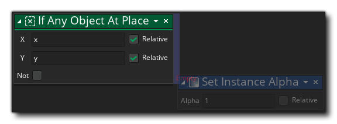

Si tout objet à Si tout objet à
Si tout objet à Si tout objet à Cette action est utilisée pour vérifier et voir s'il existe une instance d'un objet à une position basée sur le masque de collision de l'instance appelante. Vous donnez la position, qui peut être une position absolue ou une position relative à l'instance, et l'action retournera true s'il y a une collision ou false s'il n'y en a pas. Vous pouvez également cocher la case "Non" pour vérifier s'il n'y a pas de collision à la position donnée, et l'action retournera alors true si aucune collision n'est trouvée et false autrement. Les collisions sont calculées en fonction du masque de collision de l'instance d'appel chevauchant le masque de collision de n'importe quelle instance à la position (comme si elle était "placée" à la position).
IMPORTANT! Les collisions ne seront enregistrées que pour les instances ayant un masque de collision valide, c'est-à-dire: elles ont un sprite assigné au sprite_index ou un sprite assigné à mask_index. Si l'une des instances de la collision n'a pas de masque de collision, la collision ne sera pas détectée, quel que soit le dessin de l'instance à ce moment-là.Notez que pour ajouter des actions dans un bloc "if", elles doivent être placées sur le côté de l'action, comme indiqué dans l'image ci-dessous: 

Argument La description x La position x à vérifier y La position y à vérifier
Le code de bloc d'action ci-dessus vérifie la présence d'une collision à la position actuelle de l'instance et si l'un d'eux est trouvé, il fusionne l'instance avec le rouge, sinon le mélange est normal (blanc).